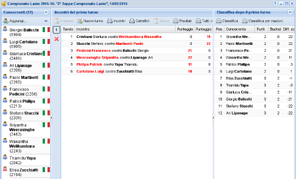
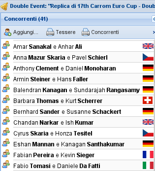
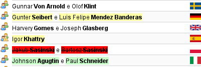
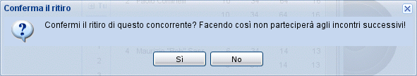
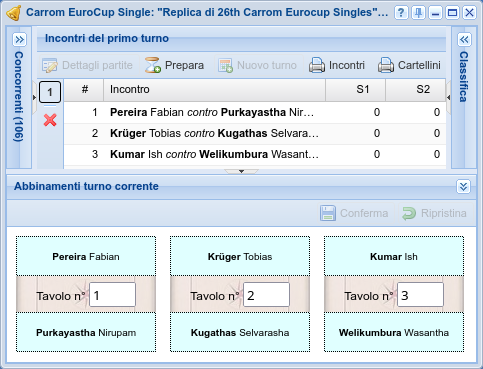
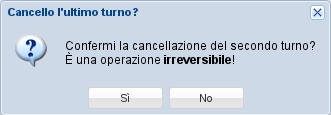

Gestione torneo¶

Gestione torneo¶
Il cuore dell'applicazione è in questa finestra, composta da quattro pannelli.
Sulla sinistra ci sono i concorrenti, dove possono essere inseriti nuovi giocatori, ritirati quelli presenti oppure organizzati in squadre se giocatori per squadra del campionato è maggiore di 1 (è possibile farlo solo al primo turno).
Sulla destra c'è il pannello con la classifica attuale. .. , possibilmente raggruppata per nazionalità.
In basso c'è una vista che consente di cambiare manualmente gli abbinamenti di un nuovo turno generati automaticamente: generalmente questo è necessario solo per il primo turno, ma se sai quello che stai facendo è possibile modificare le combinazioni di qualsiasi nuovo turno tenendo premuto il tasto ALT mentre si clicca sul pulsante di espansione del pannello.
Lo spazio rimanente al centro è dedicato agli incontri.
I tre pannelli ai bordi possono essere minimizzati, massimizzando così lo spazio disponibile per gli incontri. In particolare, il pannello di sinistra e quello in basso vengono usati solo subito prima e immediatamente dopo la creazione del primo turno, e pertanto vengono minimizzati automaticamente.

Pannello concorrenti¶
Concorrenti¶
Questo pannello viene usato principalmente quando si comincia un nuovo torneo, per comporre il gruppo di giocatori che vi parteciperanno. Usando il drag&drop è possibile trascinarci dentro nuovi giocatori, oppure riorganizzadone le squadre, come mostrato dalla figura: si possono trascinare singoli giocatori da una squadra all'altra, oppure aggiungerne di nuovi trascinandoli dalla finestra dei giocatori. Il pulsante aggiungi… mostra quella finestra, con i soli giocatori non ancora iscritti al torneo.
Nota
È possibile aggiungere nuovi giocatori in qualsiasi momento, anche quando il torneo è già cominciato e sono stati già giocati degli incontri: sebbene nei tornei ufficiali non sia generalmente consentito, in quelli amatoriali può succedere che un giocatore arrivi tardi, oppure che uno spettatore chieda di poter entrare nel gioco. In tal caso, il nuovo giocatore viene inserito in fondo alla classifica, con zero punti.

Correzione squadre¶
La figura successiva mostra che una nuova squadra (e quindi con un un sfondo di colore verde) è stata completata; una squadra è incomplete, con un solo giocatore: questo non ha alcun impatto sulle operazioni successive (cioè, il torneo può essere giocato comunque), sebbene sia una situazione piuttosto anomala; un'altra ancora verrà cancellata (sfondo rosso) perché entrambi i suoi giocatori sono stati spostati.
Suggerimento
I giocatori possono essere rimossi dal pannello trascinandoli e rilasciandoli su uno spazio vuoto del pannello (oppure sulla sua scrollbar, se il pannello è completamente occupato): l'icona associata all'operazione di drag riflette la situazione.
Importante
Non è possibile, per ovvie ragioni, modificare la composizione di una squadra dopo che il primo turno è stato giocato.
Avvertimento
Sebbene l'interfaccia consenta di accumulare svariate modifiche e di confermarle in un'unica transazione, quando si renda necessario ricombinare i giocatori spostandoli da una squadra all'altra, si raccomanda di effettuare e confermare una modifica alla volta, per evitare di incorrere in possibili errori di integrità.

Conferma del ritiro¶
In qualsiasi momento, un iscritto può essere ritirato con un doppio clic e confermando l'azione: questo significa che non parteciperà a ulteriori partite. Verrà comunque mostrato nella classifica.
Primo turno¶
Una volta completato l'elenco dei concorrenti si passa alla generazione del primo turno del torneo, che a seconda se questo è associato o meno a una particolare valutazione verrà generato tenendo conto della valutazione di ciascun giocatore piuttosto che con degli abbinamenti casuali.
L'arbitro può comunque decidere che la combinazione generata dall'applicazione per il primo turno non è adeguata e deve essere ritoccata manualmente.
Per farlo, basta espandere il pannello in basso Abbinamenti turno corrente e ricombinare arbitrariamente gli incontri scambiando tra loro i vari concorrenti con il drag&drop.
Per spostare un particulare incontro su un tavolo diverso, basta cambiarne il numero di tavolo.
Nota
In circostanze eccezionali può essere necessario modificare anche gli abbinamenti dei turni
successivi, ad esempio quando si sta inserendo un torneo già giocato senza l'ausilio di SoL.
Se sai quel che stai facendo, puoi farlo tenendo premuto il tasto ALT mentre clicchi sul pulsante che espande questo pannello.

Ricombinazione manuale¶
Suggerimento
Quando ci sono dozzine di tavoli, aumenta l'altezza del pannello trascinando il suo bordo superiore.
Dovendo scambiare due giocatori molto distanti l'uno dall'altro, puoi usare la rotellina del mouse per far scorrere i tavoli mantenendo premuto il pulsante del mouse durante il trascinamento.
L'associazione tra i singoli incontri e il tavolo da gioco è casuale, per il primo turno. Dal
secondo in poi SoL cerca di far giocare ogni singolo giocatore su un tavolo diverso ad ogni
turno, seguendo l'ordine in classifica. Questo garantisce che i giocatori più forti giocheranno
di preferenza su tavoli diversi con numero basso, mentre quelli in fondo alla classifica sui
tavoli con numerazione più alta; in particolare quando ci sono pochi giocatori (e quindi pochi
tavoli) sarà più probabile che ai giocatori meno forti venga assegnato più volte lo stesso
tavolo.
Incontri¶
Il pannello centrale è dove si svolgono la maggior parte delle operazioni: lì, iterativamente, viene creato il turno successivo, inseriti i risultati e calcolata la nuova classifica. I pulsanti sulla sinistra del pannello consentono di rivedere i risultati di qualsiasi turno giocato: anche il pannello con la classifica viene ricaricato per mostrare quella corrispondente.
Attenzione
Normalmente solo l'ultimo turno risulta modificabile, visto che gli abbinamenti di ciascun turno dipendono dai risultati dei turni precedenti. È quindi importante prestare particolare attenzione nell'inserimento degli score.
Nota
Nei tornei importanti è obbligatorio stampare i risultati e lasciarli in mostra per qualche minuto (oppure visualizzarli sullo schermo).
I vincitori devono controllare la correttezza, prima di generare il turno successivo.
Tuttavia può accadere che per un errore di qualsiasi genere siano stati inseriti risultati sbagliati e sia pertanto necessario correggere in qualche modo la situazione.
Se l'errore è stato commesso nell'ultimo turno giocato e quello successivo non è ancora iniziato, è sufficiente cancellare l'ultimo turno (se è già stato generato), apportare le rettifiche del caso e procedere normalmente.

Cancellazione ultimo turno¶
Qualora invece ci si accorgesse di errori nei risultati di turni precedenti e siano già
stati giocati ulteriori turni, è comunque possibile modificarli (SoL chiede esplicita
conferma quando si tenta di farlo): la classifica verrà ricalcolata, ma ovviamente le
combinazioni dei turni successivi non verranno alterate.
Infine, se l'errore viene rilevato solo quando il torneo è terminato, l'unica soluzione possibile è intervenire manualmente sui punteggi finali, ottenendo un ordine corretto nella classifica del torneo e di conseguenza anche in quella di campionato.
Suggerimento
Per inserire i risultati di ogni turno, vi sono due strategie:
ordinare i cartellini di gioco per numero di tavolo crescente, procedendo quindi all'inserimento dei singoli punteggi: in questo caso, può essere utile il tasto TAB che sposta il focus di inserimento da un campo al successivo;
quando il numero di tavoli è elevato (e quindi l'ordinamento manuale dei cartellini di gioco risulta troppo laborioso), è utile il poter “saltare” direttamente all'inserimento dei risultati di un particolare tavolo: avendo il focus nel pannello degli incontri (ma non in modifica di un risultato), semplicemente digitando il numero di tavolo il focus verrà spostato sulla riga con il tavolo in questione, entrando direttamente in modifica del punteggio del primo giocatore di quell'incontro.
Mentre si sta preparando il turno successivo, cioè mentre vengono inseriti i punteggi dell'ultimo turno giocato, si controllano i risultati e si genera il nuovo turno, è possibile mostrare un conto alla rovescia in una nuova scheda del browser usando la voce Prepara del menu.
Quando il nuovo turno è pronto, è possibile mostrare un conto alla rovescia leggermente diverso con la voce Gioca.
Turno finale¶
Nei tornei maggiori è possibile giocare un ulteriore turno per determinare le prime due (o quattro) posizioni della classifica.
Storicamente SoL non consentiva di inserire i risultati di questi incontri finali e l'unico
modo per influenzare la classifica era quello di correggere manualmente i premi finali del
torneo. Nella versione 3.1 è stato introdotto un meccanismo per gestirli, che è controllato dal
campo finali del torneo.
Quando viene impostato a 1 oppure a 2, un pulsante Turno finale appare nel
menu: esso genera il turno finale con un incontro tra i primi due concorrenti nella classifica
e, quando è impostato a 2, un altro tra il terzo e quarto concorrente, dove potranno essere
inseriti i risultati delle finali. Quando Tipo di finale del torneo è impostato a
Al meglio di tre game, potranno essere generati fino a un massimo di tre ulteriori
round, usando il consueto pulsante Nuovo turno nel menu.
Non appena i risultati di tutti i turni sono stati inseriti, i premi finali vengono assegnati automaticamente e il torneo è terminato.
Classifica¶
Ogni qualvolta si modificano e confermano i risultati dell'ultimo round la classifica viene automaticamente ricalcolata e mostrata qui. La colonna premio è generalmente visibile solo dopo aver effettuato la premiazione finale.
Suggerimento
Con un doppio clic su un giocatore il pannello degli incontri si focalizza mostrando solo gli incontri effettuati da quel giocatore. È possibile mostrare il dettaglio di altri giocatori, sempre col doppio clic sul nome. La vista tradizionale viene ripristinata sia facendo doppio clic una seconda volta sul medesimo giocatore e comunque quando viene creato un nuovo turno di gioco.
Dopo aver effettuato la Premiazione la colonna premio può essere modificata, consentendo così di forzare i premi assegnati, piuttosto che scambiare eventualmente l'ordine dei giocatori in testa in base all'esito della finale.